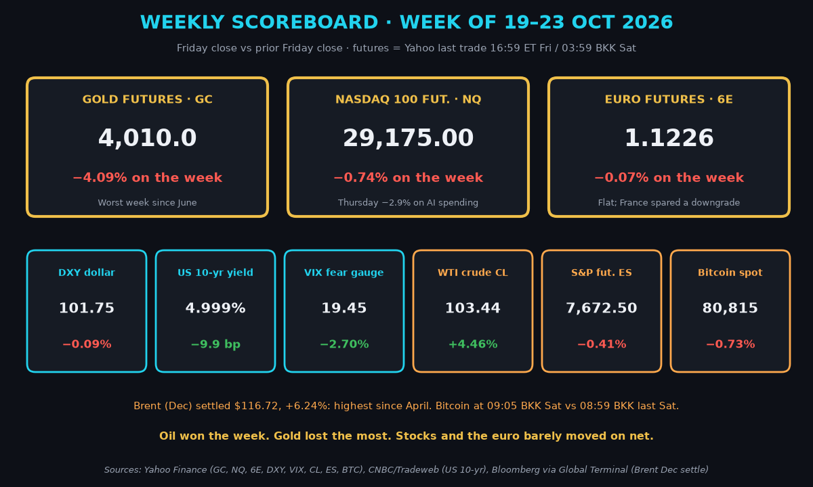
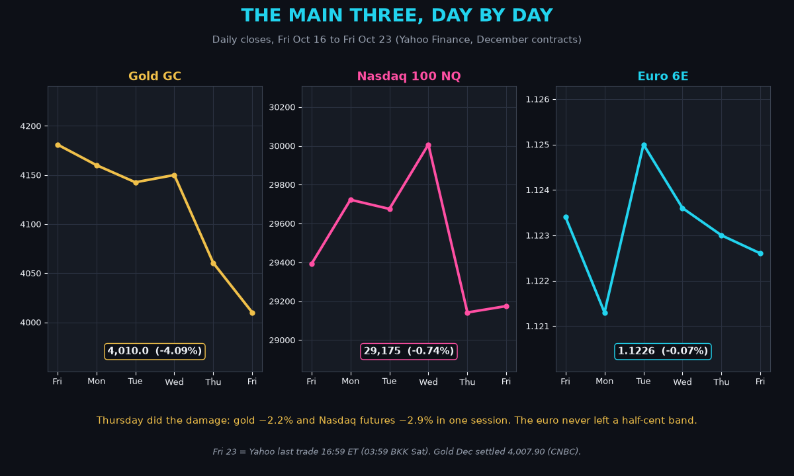
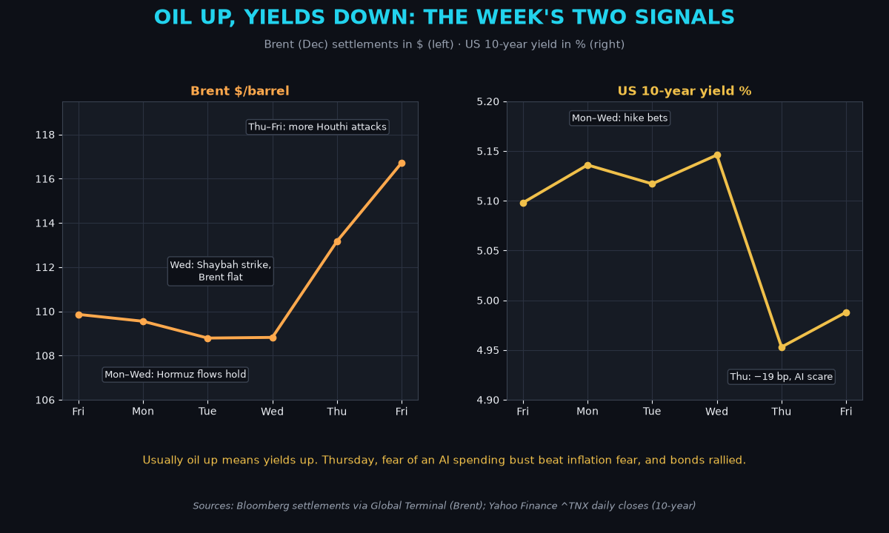
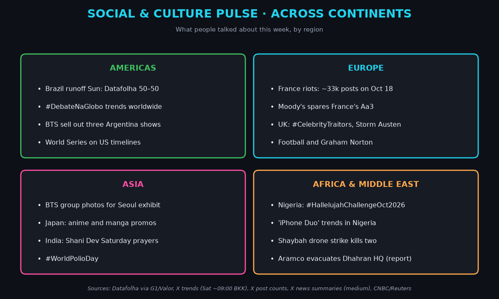
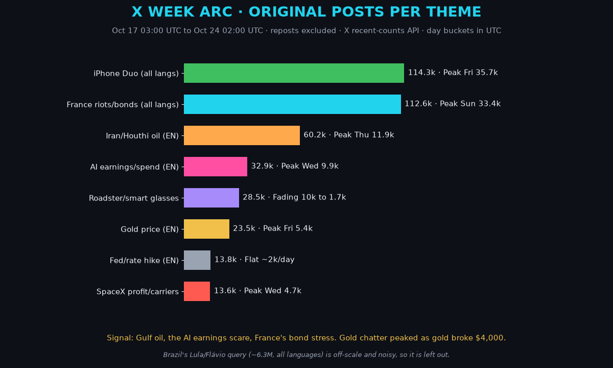
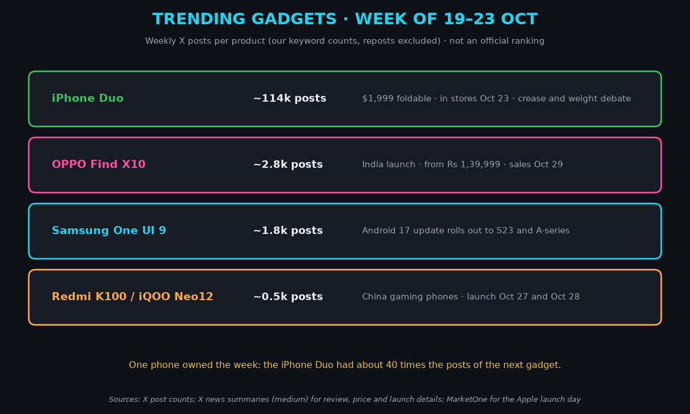
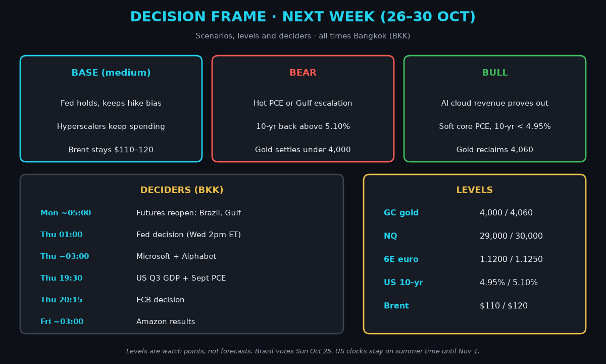

Saturday Weekly Markets Wrap · Sat Oct 24, 2026 (BKK)
April · Weekly Markets Wrap · 2026-10-24
Week of Mon Oct 19 to Fri Oct 23. Futures are Yahoo's last trade at 16:59 ET Friday, which is 03:59 Saturday Bangkok time (BKK), unless noted.
Headline: oil won, gold broke. Gold futures fell 4.09% to 4,010.0, their worst week since June. Brent oil settled at $116.72, up 6.24% and its highest since April.
So what? Two fears fought all week. Oil says inflation and more Fed rate hikes. AI spending doubts say slowdown. On Thursday the slowdown fear won, bonds rallied hard, and gold still fell. That tells you rate-hike fear, not panic, is driving gold.

1) The main three
The takeaway: gold took the hit, Nasdaq futures round-tripped, and the euro went nowhere.

- Gold futures (GC, Dec): 4,010.0, −4.09% on the week, at 03:59 BKK Saturday (Yahoo). December settled at 4,007.90 (CNBC). Driver: oil pushed up rate-hike bets, and gold pays no interest, so it loses appeal when rates may rise.
- Gold fell four of five days. Spot gold dipped under $4,000 for the first time since mid-July (CNBC).
- Nasdaq 100 futures (NQ, Dec): 29,175.00, −0.74%, at 03:59 BKK (Yahoo). Driver: Tesla and Meta revived doubts about AI spending, and futures fell 2.88% on Thursday alone.
- NQ settled at 30,007 on Wednesday after SpaceX's big profit, with an intraday high of 30,113 (Yahoo), then gave it all back.
- Euro futures (6E, Dec): 1.1226, −0.07%, at 03:59 BKK (Yahoo). Driver: France's riots and bond stress weighed, but the dollar was flat too.
- Euro-area business surveys missed: composite PMI 51.9 versus 52.7 expected (Reuters, S&P Global). A PMI is a survey of purchasing managers; above 50 means growth.
Context. The dollar index (DXY, the dollar against six major currencies) was 101.75, −0.09% (Yahoo). The US 10-year yield, what Washington pays to borrow for ten years, ended at 4.999%, down 9.9 basis points (CNBC; a basis point is 0.01 percentage point). It fell 19 bp on Thursday, the most since March 2023. The VIX, a "fear gauge" built from S&P 500 options, was 19.45, −2.70% (Cboe via Yahoo). US crude (CL, Dec) was $103.44, +4.46% (Yahoo). S&P 500 futures (ES) were 7,672.50, −0.41% (Yahoo, 04:00 BKK). Bitcoin was $80,815, −0.73% at 09:05 BKK Saturday (Yahoo).
2) What happened
The takeaway: Gulf attacks set the oil price, and AI earnings set the stock mood.

- Geopolitics. Early on Wednesday, Oct 21, a drone aimed at Saudi Aramco's Shaybah oil field was shot down, and falling debris killed two people. Output was not hit (Bloomberg via World Oil, Arab News). Brent barely moved that day: $108.82, +0.03%. On Thursday, more Houthi attacks on Saudi Arabia pushed oil up, and Aramco told staff to leave its Dhahran headquarters (Reuters). The Houthis also claimed an attack on Aramco sites in the port of Yanbu. Saudi Arabia has not confirmed it (Reuters). The New York Times reported the US and Israel have plans for new Iran strikes after the Nov 3 midterms. Not confirmed.
- Oil. Brent rose 7.26% in two days: +4.0% to $113.17 on Thursday, then +3.14% to $116.72 on Friday as Houthi attacks went on and the UAE reported an oil spill (Reuters). Washington invoked the Defense Production Act for refining (MarketOne).
- Tech and AI. SpaceX earned $4.4B, against about $1.88B expected (Saxo). Then Tesla and Meta reignited worries about AI costs, and the Nasdaq had its worst day since June (Reuters).
- Telecoms. SpaceX is reportedly seeking cell sites for a US wireless service. Verizon, AT&T and T-Mobile fell about 4% (Bloomberg).
- Business. American Express is cutting about 5% of its workforce to "prepare for AI" (CNBC).
- Economy. US business activity stayed strong: flash composite PMI 57.6 (S&P Global). Consumers are gloomy: Michigan sentiment 48, with one-year inflation expectations at 4.7% (University of Michigan via CNBC).
- France. Its 10-year yield passed 5% for the first time since 2002 (CNBC). Friday night, Moody's kept France at Aa3 with a negative outlook. Markets had priced a downgrade (Reuters).
- Scoreboard. S&P 500 7,623.68 (−0.47%). Nasdaq Composite 25,955.34 (−0.71%). Dow 52,215.16 (+0.41%). Russell 2000 small caps +2.0% (T. Rowe Price). The SOX chip index fell 3.2% and the Nikkei 4.0% (Yahoo).
Mentor beat: small caps rose while megacap tech fell. Money is rotating, not leaving.
3) Social and culture pulse
The takeaway: Brazil's vote and France's streets were the global stories; K-pop and memes filled the gaps.

- Americas. Brazil votes Sunday. Datafolha has Flávio Bolsonaro 47% and Lula 46%, tied at 50–50 in valid votes (G1). Friday's Globo debate tags led worldwide trends Saturday morning. BTS played three sold-out shows near Buenos Aires (X news; medium).
- Europe. France's riots peaked on X at about 33k posts on Oct 18. Weekend UK feeds are #CelebrityTraitors, Storm Austen and football.
- Asia. BTS fans flooded timelines over new group photos for a Seoul exhibition. Japan's trends are anime and manga promotions. India's Saturday trends are Shani Dev prayers and #WorldPolioDay.
- Africa and Middle East. Nigeria's #HallelujahChallengeOct2026 trended again, and so did "iPhone Duo." Saudi feeds tracked the Shaybah strike.
- Global memes. "Lock screen, last song, Pinterest" screenshot chains ran all week (X news; medium). Pure fluff, but huge reach.
4) X trends: the week arc
The takeaway: a phone and France's riots topped X volume, but Gulf oil was the steadiest market signal.

- iPhone Duo: about 114k posts, peaking at 35.7k on launch day.
- France: about 113k, peaking on Sunday Oct 18, then fading as Moody's neared.
- Iran, Houthis and oil: about 60k, rising each day to 11.9k on Thursday.
- AI earnings: about 33k, peaking Wednesday night US time with Tesla and Meta.
- Gold: about 23k, peaking Friday as it broke $4,000. Chatter followed price, not the other way round.
- Signal: Gulf oil, AI costs, French bonds. Noise: screenshot challenges, wrestling, celebrity names.
5) Trending gadgets
The takeaway: Apple's first foldable was the only gadget that mattered this week.

- iPhone Duo. $1,999, in stores Oct 23 with lines at Fifth Avenue (X news; medium). Reviewers praised the battery and hinge but flagged weight and a deepening crease. Apple stock was little changed (MarketOne).
- OPPO Find X10. India launch from Rs 1,39,999, sales Oct 29 (X news; medium).
- Smaller waves. Samsung's One UI 9 update. Redmi K100 and iQOO Neo12 gaming phones launch in China Oct 27 and 28.
6) Decision frames for traders and investors
The takeaway: next week is the biggest of the year, with the Fed, the ECB, the Bank of Japan and three AI giants. Size positions for big swings.

- Base case (medium): the Fed holds at 3.75–4.00% with a hike bias (Newsquawk). Hyperscalers keep spending. Brent holds $110–120.
- Bear case: hot inflation or Gulf escalation lifts the 10-year above 5.10%. Gold settles under 4,000.
- Bull case: cloud revenue proves AI pays. Soft core PCE pulls the 10-year under 4.95%. Gold reclaims 4,060.
- Deciders (BKK): futures reopen Monday about 05:00 after Brazil's vote. Fed Thursday 01:00. Microsoft and Alphabet about 03:00 Thursday. US GDP and PCE inflation Thursday 19:30. ECB 20:15 Thursday. Amazon about 03:00 Friday. Bank of Japan on Friday.
- For Jim: gold needs the 10-year under 5% to hold 4,000. NQ lives between 29,000 and 30,000 until the hyperscalers report. The euro is pinned between 1.1200 and 1.1250; the ECB could break it.
Interpretive aside: Saturn-ruled Saturday, and India's feeds are praying to Shani Dev, the god of discipline. Fitting for a week that rewards small sizes. Symbol, not signal.
Confidence: index closes and settlements are high (Reuters, CNBC, Bloomberg via Global Terminal). Futures are Yahoo's last trade. Fed odds and calendar are medium-high (Newsquawk, StockTitan, Saxo). X news summaries are medium. The Iran strike plans are unconfirmed.